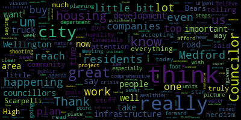
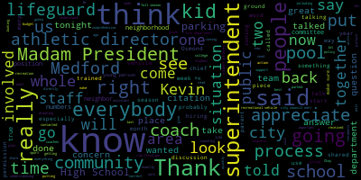
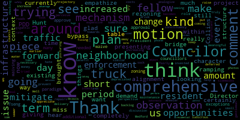

AI-generated transcript of City Council 07-11-23
English | español | português | 中国人 | kreyol ayisyen | tiếng việt | ខ្មែរ | русский | عربي | 한국인
Back to all transcripts
[Morell]: 14th regular meeting of the Medford City Council July 11 2023 is called to order Mr. Clerk, please call the roll.
[Hurtubise]: Vice President Bears. Council carry a presence. Council Collins. Council night. I see Councilor Knight online but I he has not answered. Councilor Scarpelli. Councilor Tseng
[Morell]: President Morell present for present three absent, please rise for the flag.
[Caraviello]: Republic for which it stands, one nation under God, indivisible, with liberty and justice for all.
[Morell]: Announcements, accolades, reminiscences, reports, and records. 23-367 offered by Vice President Bears, Councilor Tseng, and President Morell. Be it so resolved, the Medford City Council congratulate the Medford Vocational Technical High School Robotics Team for competing at the World May ROV Championships. The team finished 14th overall, placing them in the top 50% of all competitors. Vice President Bears.
[Bears]: Thank you, Madam President. Thank you to my fellow colleagues for co-sponsoring this resolution or lead sponsoring it, President Morell. And we had the robotics team up here a few weeks ago. They were heading off to this championship. They were raising money and just wanted to congratulate them on their great success and wish them even more luck in the future. Thank you.
[Morell]: Thank you. Councilor Tseng.
[Tseng]: Thank you. Thank you for having Councilor Bears and I on this resolution. I think it's a great opportunity to showcase the great work that's happening at Medford High. I think sometimes it goes a little understated, but the students and teachers up there are up to some really great work. I think the robotics team is a great way to highlight that, and it's truly a pride of our community. I think I was fortunate to be able to visit the high school a few weeks ago, and it's truly, there's so much stuff up there that's happening that doesn't get enough attention, and it really behooves us to bring more attention to great, really, I think, really great stuff that's happening like this.
[Morell]: Thank you, Councilor Tseng. Councilor Caraviello.
[Caraviello]: Thank you, Madam President. And I was able to actually see the robot, And that was built by these young students. And you know, the scary part was they're all freshmen and sophomores. Just imagine the work they're going to do when they get to be juniors and seniors. So congratulations on their work. And that's a real bright spot for our high school.
[Morell]: Thank you, Councilor Caraviello. And yeah, if I could just add, really want to congratulate them and you know thank them for the many hours they spent in the council chambers when we first recognized them so they performed excellent so hopefully it didn't impact them too much those hours spent with us, and they did note on their GoFundMe page that this placing in the top 50% was a huge jump from last year, their first year competing where they placed in the bottom 10%. So as Councilor Caraviello said, all returning students, and they have some exciting things ahead of them. So congratulations to the team once again. Oh, yeah. As I'm jumping ahead.
[Scarpelli]: And again, Madam President, I think that when the students did come up, you could see the excitement. What I'm proud of is really we sent a challenge out there and how everybody rallied financially to support this group so they can go and represent Netrid at that championship level. So I think that, you know, they deserve all the credit they received from us, but it's glad to see that this community really supports our kids. So thank you.
[Morell]: Thank you, Councilor Falco. So on the motion of Vice President Bears, seconded by Councilor Tseng, Mr. Clerk, please call the roll.
[Hurtubise]: Vice President Bears. Yes.
[Unidentified]: Yes.
[Hurtubise]: Yes. Yes. Yes. Yes. Yes. Yes. Yes. Yes.
[Morell]: Be it resolved that the Medford City Council send a special thank you to the recreation director Kevin Bailey his lifeguard staff at school Medford fire and Armstrong ambulance for their quick response and saving the life of a drowning youth at Tufts pool.
[Scarpelli]: If I can, I can approach the podium. Thank you, Madam President. I see a few friends here tonight and I'm glad they can make it. I think it was a few weeks ago, we had a very scary and horrific situation and dangerous situation occur over at the Tufts pool. And something that would have really put our community, I think, in a real tailspin, and it would have affected so many lives in a negative manner, especially the young person that was drowning. When I heard this situation, I was fortunate that my daughter is a lifeguard and she's trained by the best. And I always thought, as the assistant recreation director, I have 40 lifeguards, I have two pools, and wanted to make sure that our staff is trained the correct way. And it's funny, because when I called Kevin and I said, Kevin, I'm going to put this up, he says, don't put our names on this. It's not about us, it's about the kids. But it wouldn't be fair. if we didn't acknowledge yourself, Kevin, and Danny, folks, for your leadership in what you do for our kids. People don't know, I asked Kevin to come over and train my lifeguards in Somerville a few weeks ago, and I appreciate he did that. And there's a reason for it. He's the best in the state at what he does. And for what happened that day, You know, I had a great conversation with my friend Osman and said, you know, what happened and how graphic the whole situation was. When you hear a kid drown, a kid who's drowning, what do you think? It's like, oh, he was flailing his, no. To hear the whole description of, you know, getting the call and the lifeguards all running into action. And, and Osmond seeing the young person at the bottom of the pool and how, how was it called? It was, uh, he was pinned, I guess, face first on the, on the floor of the pool and everybody went into action. And It's something that needs to be told, and it needs to be elevated, and our lifeguards and our staff need to be congratulated. I know the whole story, it's phenomenal. The buzz went around within 15 minutes around Medford, how Osmond went right in the water. did exactly what he was trained to do, bring him to the top, turn, the backboard was on site, staff was there, they took the person, the young person on the deck, everybody's in action, everybody, I know that the pool manager right away knew her role, the fire department was called, and in typical fashion, Osmond said to me, he says, no, Mr. Scapelli says, the firemen were amazing. And I think that's what the whole team, they all knew what to do. Because when I talked to the fire department, they said, no, no, it's a young person who jumped in and brought, all we had to do was get there and then do what we're trained for. And that's save a life on the deck. So between Armstrong ambulance and the fire department and Kevin's training, What I really wanted to do tonight is just acknowledge you as quickly as we can, because I know a lot of you young people off to college and we won't see you for a few months, but we contacted the clerk and he put together a citation for you that, you know, this is probably, I've given out a thousand citations, champions in sports, academic awards, music awards, right, drama club, this is the most amazing citation that we're giving out tonight. And I'm so I'm so happy for that. Because what you people did, right? So I know chief chief just walked in, I said, I know, you know, give him kudos and his staff for what the fire department chief I know you don't like the accolades and that's your job, but the fact that the firefighters and the lifeguards work together to save a life. And so what we did is we put a citation together. It reads, the Medford City Council takes great pleasure in presenting this council accommodation to, this is our manager at the pool. From what I'm told, she's like, She's like the den mother, and she's taking care of everything at the pool. That's Danielle DelBene. And for your quick and heroic response and saving the life of a drowning youth at Tufts Pool. If you can come on up and take a citation, Danielle.
[Hurtubise]: Come on here.
[Scarpelli]: And then if you can, everybody knows how Zach likes to be taking pictures with everybody. So we're just going to take a big picture with everybody.
[Unidentified]: All right.
[Scarpelli]: No, thank you. You don't like this. Thank you. Next, we have Sophia Purifuri.
[Hurtubise]: Come on over here. You're so used to coming up here to get them, so be it. So we'll see. Congratulations. Thank you.
[Scarpelli]: We have Ellis Vasquez. Coleman Jones, is Coleman here tonight? Okay. Arias Bravo.
[Unidentified]: Did I say it right?
[Hurtubise]: How do you say it? Arisa, I'm sorry. Because when I asked Kevin, he said just say Arias. Sorry.
[Scarpelli]: Is it Aja Bravo, oh, how is that I Tell you what, this is this is Kevin again.
[Unidentified]: All right, come on up And then my favorite is
[Scarpelli]: Osmond McCormack. So if we can, if everybody come right up front, I'd like to take a picture so we could send this off to the newspapers and make sure that everybody realizes what you did and how special people that you are. So come on up.
[Hurtubise]: This is perfect. This is really nice.
[Unidentified]: it's
[Hurtubise]: Oh, Chief Freeman. One second.
[John Freedman]: Okay, it's a new one. All right. Good. Good. No. Okay. I just want to take this opportunity to thank the lifeguards and every and the staff at the pool for just attention to detail, being alert and doing their job. And the reason this rescue happened was because the team came together, starting with them being alert, realizing there was a problem. Everybody jumped into action. The fire crews got on scene under two minutes. I checked the CAD. We had EMS on scene. I'm definitely going to put these crews in for an accommodation. Just haven't got around to it yet, been really busy. But when I looked into this, obviously, It was the team came together at the perfect time and the outcome is a life was saved. And that's what we like to see. It's not always how it goes, but this particular incident went that way, starting with the lifeguards. They had the patient out of the water on the board. Engine five gets there and they realize, you know, there's an obstruction there. Get the patient on his side, you know, remove that obstruction and then rescue breathing. ambulance gets on scene, patient transported, and the end result is the patient is released from the hospital and doing well. So I just want to take this opportunity to quickly to just again thank everybody and thank the council for recognizing them. That's it.
[Scarpelli]: Thanks, Chief.
[John Freedman]: Thank you again.
[Morell]: Any other councillors would like to speak on this resolution? Councilor Tseng.
[Tseng]: I'll be brief since I think Councilor Scarpelli did such a great job telling us about everything. I think what really stands out to me and what Councilor Scarpelli said was that all the teamwork and the coordination and the heroism that came through in this story. and the humility from everyone here and even accepting the awards and accepting the accolades today, the humility really shines through. But as a community, I think it's really important that we take this moment and both reflect on the heroism that you all showed. but also celebrate all the work that you all have been up to. And you guys really are, this is the star, the shining star of Medford. So thank you all so much.
[Morell]: Thank you, Councilor Sen. Thank you, Mayor and Councilors. I'll just again speak briefly I know Councilor Scarpelli covered all but thank you so much Councilor Scarpelli for introducing this. I spent years in high school as a pool lifeguard, and I probably spent most of my hours just telling people not to run. And I never had this challenging moment where all of your training comes into action and it's you know it's, it's, it's everything changes in a matter of seconds. I am so proud of you all and so impressed with you all. And it's an incredible thing that you all did with Metro Fire, with Armstrong Ambulance, but it's so much for young people to do something like this. And I'm really proud that you guys call Medford home and work in Medford. So thank you for your service.
[Kevin Bailey]: I just want to add just a few extra things in there as well. You know, I also think this is really an important time to not only acknowledge the lifeguards for the skills that they did, but all of the lifeguards that work both at the pond and the pool. One of the things that we talk about a lot in our lifeguard class is that you're part of a lifeguard team. You know, it's not just an individual person. I think this is a perfect example that you can see in an incident that we had team itself was able to quickly act. It's not just one person who performed the rescue, but it's everyone knowing exactly what needed to happen with the removal, with rescue breathing, with getting the BVM out there, with clearing the pool. It really is a team. And one of the things that I think a lot of people don't realize is that This wasn't just this didn't happen because of a miracle, or we got lucky. This is through training. And this is something that the lifeguard spent a lot of time and not only during the academic year taking the lifeguard in class, but the month of June. It is a very, very busy month because we spend weekends doing orientation. We practice specifically, not just in a lifeguard class, but at the pool, how to handle that emergency or when we're at right spot, how to handle it, how to handle a missing child. It's a lot of extra hours. These kids are in the water. As you remember, in the beginning of the season, we're in the pool right when it fails, it's freezing out. they're in there, they're practicing, and it's not just the lifeguards here, but the rest of the lifeguard team, the extra work, the hard work that goes into getting the pool ready for the season and being prepared. So again, I want to thank the lifeguards, and I really want to thank the rest of our lifeguard team, because it is really remarkable what happened, and again, the amount of training that they do to prepare for it. Thank you.
[Morell]: Thank you, Director Bailey. If I can.
[Scarpelli]: Thank you, Mr. President. I, you know, to that point, I know that I see it firsthand. So when it's pouring outside, and Gianna asked my wife to get eight beach towels, because they have training and we said it's pouring, and it's 52 degrees out. And we said, What is Kevin thinking? Yeah. And I take that all back, have whatever I was going to publicly tell you. And this is the reason why. And Janet, just like probably the rest of the lifeguards, they go gladly because situations like this because and people don't realize it's just not a it's just not a clean, safe pool all the time. Right. all of our lifeguards also train with your staff and yourself at the pond. And that's a difficult, especially with bad weather. So, you know, and it's two different types of positions. So these kids really commit themselves and your staff. And again, we appreciate what you guys have done and you made us look really, really good in this community. And I know there's one family that's very, very happy today. So thank you. Thank you.
[Morell]: The motion of Councilor Scarpelli is seconded by Councilor Caraviello. Mr. Clerk, please call the roll. I see Councilor Knight on Zoom. I don't know if he's with us or not.
[Hurtubise]: I think he's there. I think he's having issues. Okay.
[Morell]: We will keep trying.
[Hurtubise]: Vice President Bears. Yes. Councilor Caraviello.
[Morell]: Yes.
[Hurtubise]: Councilor Collins.
[Morell]: Yes.
[Hurtubise]: Councilor Knight. Yes. Yes. Yes. Yes.
[Morell]: Yes. Six in the in front of zero negative one absentee motion passes records the records of the meeting of June 20, 2023 were passed your Councilor Knight. Motion of embarrassment bears the table seconded by Councilor Collins, Mr. Clerk, please call the roll. You're all welcome to say, but yeah, thank you.
[Bears]: It's going to be a fun one. Yes. Yes.
[Hurtubise]: Yes, six in the affirmative, zero in the negative, one absent.
[Morell]: Motion passes. The records are tabled.
[Bears]: Motion is to suspend the rules to take papers 23-372 and 23-369. On the motion to suspend the rules to take papers 23-372 and 23-369.
[Morell]: Councilor Scarpelli, Mr. Clerk, please call the roll. This is just a motion to suspend the rules, take those papers out of order.
[Hurtubise]: Vice President Bears? Yes. Councilor Caraviello? Yes. Councilor Collins?
[Unidentified]: Yes.
[Hurtubise]: Councilor Knight? Councilor Scarpelli? Yes. Councilor Tseng? Yes. President Morell?
[Morell]: Yes, six in the affirmative, zero in the negative, one absent, motion passes. 23-372, to Honorable President and members of the Medford City Council, regarding donation acceptance. Dear President Morell and members of the City Council, I respectfully request and recommend that your honorable body approves under MGL Chapter 44, Section 53A, a donation of 25 child and 25 youth size life jackets from the Medford Kiwanis Club to the City of Medford for the use by the Medford Recreation Department. So life jackets will have the metric one slow go on the life jacket respectfully submitted beyond a Lungo-Koehn mayor.
[Caraviello]: Thank you, Madam President. This sort of goes hand in hand with what somebody just got to discussing but I'm proud to be a part of this organization. One is who made this donation of the life jackets to the city of Medford. It's just something that this is what our club does, we give away about $50,000 a year to all youth things in the city. So I just want to thank the club for making the donation.
[Morell]: Any further motion to approve on that motion of bears to approve, seconded by Mr. Clerk, please call the roll.
[Bears]: If he's not present.
[Morell]: Yeah, I guess, sure.
[Bears]: We can see. But he's not marked present.
[Morell]: No, he's not. This is true. He's not marked as present. He has never, he has not made an indication publicly that he's here.
[Hurtubise]: He's trying to, he's trying to get a selfie with you. Well, I can't. Yes. Yes. Yes. Yes. Yes.
[Morell]: City Council President Nicole Morell and honorable members of the City Council from the Office of Planning, Development and Sustainability, July 6, 2023, regarding a proposed planned development district one ordinance amendment, 100 Winchester Street, Medford, 02155. Okay. How? Oh, he's in the chat. Okay. I don't know if that counts. Okay. He's texting you. I'll remove. Okay. You can note it. It's passed either way. Back to 23-369. For the procedure outlined in section 94-9.2 PDD of the Medford zoning ordinance, applicant 96-102 Winchester Street LLC, Stephen J. Nardone, manager, submitted a proposed amendment, PDD 1, for the site located at 96-102 and 104 Winchester Street, Medford Mass 02155, assessor's map number X-09-60, Y-09-7, Y-09-15, as shown on locus map PDD1. The property is located in a general residential GR zoning district. The applicant proposes zoning to align with the perspective project, which would include a 65 unit residential development and a 4,000 square foot commercial structure. The 4,000 square foot structure is intended for neighborhood friendly commercial uses such as offices, daycare, gym facilities, and other low impact uses. The Community Development Board held a public hearing on April 26, 2023, notice in accordance with MGL Chapter 40A Section 11. Though not required, a courtesy notice was sent out to abutters within 400 feet of the site. In accordance with MGL Chapter 44 Section 53G and the Community Development Board rule regarding consulting fees, the city retained legal counsel, Attorney Jonathan Silverstein of Flatman, Bobrovsky, Haverty, and Silverstein LLC to prepare the text of the amendment and provide associated legal support to staff and the board. per MGL chapter 40 a section five, the zoning amendment must now be referred from city council to the community development board will hold a duly notice public hearing on August 2 2023. The city council's public hearing for this amendment will be held on August 15 2023. After a report with recommendations by the community development board has been submitted to the council. We thank you for your review of this matter and are happy to provide additional information. And the council did also receive a memo from Attorney Silverstein just really repeating what this process is as outlined in our updated zoning. Councilors have any questions you can hear from PDS Director Alicia Hunt.
[Hunt]: Madam President, Alicia Hunt, Director of Planning, Development and Sustainability. This step in this long process is administrative. This is the point where the city council must refer this by state law to the planning board, the CD board, where there will be a public hearing. This will return to you for a public hearing. We've already set the dates for those in order to get the advertising out. So this was what you just read, but the public hearing for the CD board will be August 2nd, and the city council will be August 15th. Those would be the appropriate places for any public comment because those are the times and the places where the boards are prepared to receive public comment.
[Morell]: Thank you. Any discussion from council?
[Bears]: Motion to refer to Community Development Board.
[Morell]: Do you have a motion? I have a motion to refer to the Community Development Board, seconded by Vice President Bears. Mr. Clerk, please call the roll. Thank you, Director Hunt.
[Hurtubise]: Vice President Bears? Yes. Councilor Campbell? Yes. Councilor Collins? Yes. Councilor Knight? Yes.
[Morell]: Yes, six in the affirmative, zero in the negative one absent the English passes the papers referred to the development board. We're still under suspension.
[Bears]: I just suspended for the two papers.
[Morell]: All right, so we're going to hearings. 23-312, legal notice, Medford City Clerk's Office, notice of a public hearing, chapter 94, zoning. The Medford City Council will conduct a public hearing on July 11th, 2023 at 7 p.m. in the Medford City Council Chamber on the second floor of Medford City Hall, 85 George B. Hassell Drive, Medford, Mass., via Zoom, relative to a petition by Nutter, McClellan, and Fish, LLP, representing CPC Land Acquisition Company, LLC, to amend zoning map, City of Medford, Massachusetts, dated April 13th, 1965, as referenced in chapter 94, Medford zoning ordinance section 2.2. The amendment proposes to change the zoning district designation of the area. of the property of 99 Revere Beach Parkway Medford from industrial to mixed use depicted on the plan entitled plan of land dated March 29 2023 prepared by Tetra Tech. The property consists of two parcels map seven block five blocks 21 and 22. A zoom link to the public hearing will be posted no later than July 7 2023. The full materials for the amendment can be viewed in the office of the city clerk City Hall room 103 or on the city's website at www.medfordma.org slash department slash planning dash development dash sustainability by clicking on current city board filings. For accommodations, aids, please contact the office of the Medford City Clerk at 781-393-2425. May order of the Medford City Council, sign Adam Hurtubise, City Clerk, advertisement for transcript and some local journal, June 1st and June 8th. Director Hunt, and I do know we have Attorney Stein from KP law on the call as well. Great.
[Hunt]: I mostly wanted to so you do have a memo from the CD board with their recommendation that they recommend. They unanimously recommended that you approve this zoning map change. Daniel Evans, senior planner, and I are here this evening. If you had questions about that recommendation, and as well as our other planner, Amanda Centrello is on the Zoom, and Robin Stein, an attorney, is on the call if there are any legal questions. Thank you. Yeah, the applicant is here.
[Morell]: If you would like to just for we did get that memo at just about five today in email. And this originally came before the council, I believe on May 23, was referred to refer to the CD board. And now it's back before us.
[Scarpelli]: Right, just for clarification. This was just for at the time was for over 300 units. It wasn't mixed use correct. My refresh my memory.
[Hunt]: On the details of the project, the applicant is here and they are prepared to present on it if you would like them to. It is a residential building with one commercial unit on the first floor with the idea that it's right next to the T stop, but it's a large number of residential units and I wouldn't want to say how many without. checking my notes.
[Scarpelli]: So I appreciate that you're here, because I think this is the question that I had back then. Yeah, especially with that area and getting a lot of feedback on what's happening there. And what the T's interpretation of what their wishes are, and the rumors that what they want to do with that space and the airspace of that area. So there's a lot of variables that are in place there. miss out they said so I'm, I'm just a little concerned that what question I had back then was, what is our vision. I mean, if you can share something with us because when you look at neighboring communities, and you know look at Linfield look at assembly row, look at station landing when that was done. It was done with a comprehensive plan of what that whole area was going to look like. In essence, we're looking at one piece of what else and I think that's what, you know, people are asking for and personally myself as a gateway entrance to our community exit to our community, you know what, what do we see there what we envision.
[Hunt]: Right. And so that is something that we have talked about, we've talked about with the public, if we could do whatever we wanted, because I want to acknowledge the rumors it for the MBTA has an interest in putting a an electric bus depot and repair facility there. And they have concerns with the ability to put because we would still have the right to put residential, commercial, mixed-use life science above that, about how strong the building would have to be, et cetera. I have significant concerns about putting a critical facility, like an electric bus facility, right there next to the Amelia Earhart Dam, where there's high risk of flooding. Where on the other hand, we're not going to not develop these areas. We'll build the buildings with the understanding that there's a potential for flood, But the buildings would not be critical infrastructure facilities designed for electric vehicles. So I have been trying to work with the MBTA to try and identify a different location for that. And I know the mayor is also working with other layers of DOT about how do we find a different location for their electric bus facility. So that's sort of like the elephant in the room. In a big picture way, what we envision there is a mixed use facility with restaurants and commercial entities, stores, shops on the first floor, some sort of parking garage, because we do need parking there for the people who would live and work there, as well as people would get on the train. But one would assume that the people living there would be less likely, on average, to own vehicles, because you would literally be living one to two minute walk from a train station. and where buses do come through. And so what we have, we did the RFI, we got a lot of proposals, I think it was nine, and they all envisioned a mix of residential and commercial life science spaces in that, so that it would be a mix of different buildings, people, it would be a live work kind of community, like we see directly across the river at Assembly Row. We know there is demand for this kind of facility gathered around a T stop. So that is what we are looking at. We are working on the MBTA communities rule, and this is the area that it looks like we need to use as our district for that. We are getting ready to do some public meetings around that. We're hoping to roll some of that out in say August, September. And what we have been contemplating with the consultant is something where what we would recommend is gonna be on the order of three stories by right, because that's the density that is required to meet MBTA communities. And we're not allowed to require mixed use, we're not allowed to require additional affordable housing, and we're not allowed to require more energy efficient buildings than the code allows. However, we can incentivize those things. So what we're planning to put forward in front of the community for this area is that they could get up to six stories if they layered in those additional things that we want. So the zoning would allow three by right six under this with these additional things. The Muzz district is the other side of the T station. And I will say that our office contemplated asking you to also rezone the MBTA parcel that is between this parcel under consideration tonight and station landing, station landing is the Muzz zone. And to include that in this, and then it would be one large continuous area that would allow, that would be for this. MBTA is not bound by our zoning, so it doesn't actually impact what they wanna do there. And as long as it's owned there and we need to do some larger RFP process on the air rights, we need to do the MBTA rezoning, we decided that it would complicate matters if we were to ask you to also rezone that parcel. But if you look at the map that you were provided, it would actually make a nice contiguous area. And so this is the only parcel that's not part of the MBTA property that's not already part of the Muzz zone on that side of Revert Beach Parkway. So in that sense, this makes a lot of logical sense to go on. And that's where we sort of see this in a vision. One of the things that I think I mentioned at that meeting is that when a developer is ready to build a building and it's something that you know is going to be in demand and that your community wants, if you say to them, wait 18 months or 12 months and you'll be able like and we'll change the zoning, they don't like that and they go develop their building somewhere else and they go build it elsewhere. So we see Criterion as an excellent partner, a developer that has done further work up the river. They own the or they've developed the property on River's Edge, some of the residential buildings there they're developer of, and they do very excellent work. The fact that they wanna build here right now, we said, this is a good way to move this forward quickly and allow them to do something that will set the stage for what we're looking for and would fit in with a larger development at that location. That's where we're coming from on this.
[Scarpelli]: Okay, so I appreciate the answer. I think the biggest concern that I'm hearing from the neighbors And personally, I think that, you know, I was fortunate being a member of a municipality that was actually directly involved as we talked about with this new zoning consultant coming in plus the team that will be going out to each neighborhood. I think it's important to get, you know, as recreation, I was in all meetings as well. I have to go represent recreation at the different neighborhood meetings to talk about the vision of that area. And I think that it's nice that You, you explained it perfectly and I completely understand, but if we keep doing the spot zoning. It's really not a big comprehensive, you know, master plan that everybody wants to share. And I know that you get the word out as best you can. neighbors from that area, when you're talking about that area, they really, when we talk about this project after we voted the last time and they said 300 some odd units, what are we going to do with that neighborhood? There was nothing to calm them to understand what, you know, you're talking about Rivers Edge, you're talking about what's happening down the street in Everett, and now we're adding 300 more units. I think having the community input, that's why I implore the city, the administration, to really, and I can make this form of motion, to give us an update where we are with the hiring of our consultants as well as partners so we can work together to get this done because, like you said, waiting a year and a half They're not gonna wait. But imagine what we've already lost because we don't have a comprehensive plan, because we don't have the tools in place. So if we can get that going, if we can put that out, we'd appreciate it, Mr. Clerk, Madam President, and thank you for your answers.
[Hunt]: I appreciate it. Madam President, the CD board meeting was a public hearing, which was duly noticed, and we did not get any public comment at that meeting.
[Scarpelli]: Just to share, I appreciate that, but again. when it's affecting neighbor direct neighborhoods. I understand we post and we do that. That sounds great. But you know, as well as I do, unless people are directly impacted, and they know what's going on, that they really don't know what's going until all of a sudden shovels in the ground, like no one told us. And that's not true, but it's what's then promoted. So I just wanna make sure that it's mentioned, it's not your fault, I know you do what you're supposed to do, but I think having this piece in place, and as we talked about, putting that piece with the zoning and having the team that's gonna go out to the neighborhoods and really get what everybody's input, I think that's what a true partnership is with the community and our zoning. So I appreciate that. Thank you, Madam President.
[Caraviello]: Not that I don't support this, just a little, I'd like to see where this fits into the big plan in that area. That's, I mean, I, and I think what we're doing, I mean, this is, this is really, with spot zoning, it was just something that we've haven't done in the past and we really never liked doing that's that's I think we're sitting a little bit of a bad precedent there by doing this but it's another I'm not I am going to support it but I'd like to see where this fits in the plan overall because right now all I'm looking at is a building in the corner and you know and I don't see the vision that goes with it but that's where the concern is if If there's some type of plan, even some kind of conceptual plan, share with us so we know how this is going to fit in with everything else. Because I've heard the same thing from T people. This is going to tease, you know, not happy about what's happening over there with the air rights.
[Collins]: Councilor Collins. Thank you. Thank you, Director Hunt for presenting on this and giving us all the context around it. I certainly hear my fellow councilors observation about, you know, observations around doing things piece by piece. I completely empathize with that. I think that we're all, you know, think that this mechanism is kind of a bridge between what we have now and where we know we're going. We have the comprehensive plan. We have the existing character of the neighborhood. We know what there's demand for. We know what's currently there. And then we have plans to do a comprehensive rezoning and make sure that all of our neighborhoods are kind of brought into alignment with our comprehensive plan. So I think that this PDD mechanism is a way to make sure that we don't miss out on these opportunities while we're still ramping up for that comprehensive project. I'm really glad that we have it. I don't think any of us want to bypass these opportunities while they're on the table. And, you know, at the same time, very much looking forward to when we can do this within the structure of a comprehensive, you know, no or very few exceptions needed kind of zoning paradigm. So I would motion for approval after many of my fellow councillors additional comments. Thank you. Councilor Tseng.
[Tseng]: Thank you, Director Hunt, for presenting to us and telling us a little bit more about the area. I've read through the RFPs that we've seen, the nine that you talked about, read through this administration's press releases about it, and looked through the comprehensive plan and things like that. And between all of those documents and what you're saying today, which completely corroborates everything there, I do see the picture for the Wellington area. And it's a picture I think that because I think a lot of most of your decisions as a department is taken from that, the public input process that's gone into the comprehensive plan and the housing plan and all of that, I think is one that aligns particularly well with the goals of the city and the goals of our residents. I spend like a little bit less than two or three days in Wellington a week. And there is a lot of, especially younger folks, but there's a lot of momentum on the ground for making Wellington a more interesting place, a place where people can afford to buy houses. And even with wealthier residents, a lot of wealthier residents, maybe a little bit older than me, they want a chance to buy what buy units here too. And even for the units they could theoretically afford in Medford, it's a whole competition to buy them. And this would, you know, increasing housing stock is a really, really important way of tackling our housing crisis. And I think in another world, I definitely hear my colleagues in that we prefer not to spot them or not, not to focus on individual parcels of land. But that given the urgent nature of urgent nature of the housing crisis, given the vision that I think we generally have in our city for transit oriented development and multi and mixed mixed use development. That's, this is a project I think is promising for our city. And I think you made the excellent point that waiting is shooting ourselves in the foot. And we've seen this time and time again with housing, with development in Medford, with a lot of projects. It's been a mistake in the past. And I want to make sure that we're not giving into it. We're not accidentally shooting ourselves in the foot now. And I think that's really, really important to hear. In general, I really do look forward to working more with your department and with the zoning consultants on implementing the shared vision I think all of us behind the rail have for the area and for the city. Especially, I'm a very big fan of what you said about incentivizing affordable housing and energy efficiency and all of that. And so I would second Councilor Collins' motion.
[Hunt]: And Madam President, I do just want to make sure that everybody is aware that this approves the zoning that would allow this project to be built, but the project would then need to go through site plan review, which is when it goes under another round of public meetings and the CD board would weigh in on a lot of the details of the design, as well as any mitigation that would be anticipated from this project. So I just want you to know that that piece of it, it's just another step. I don't want anybody to think that they would get a building permit and be able to start building next week, but we would think they would apply and move through the process quickly. But there is another chance to weigh in on this.
[Morell]: Thank you, Director. Two things before I go to Vice President Bears. Lost the first one. Second one, Councilor Scarpelli. Oh, this is a public hearing, so I do need to open it up. Right. Yes, yes. No, no, it's my fault. I did so we did get a response actually, I think it was last week right after the holiday that we didn't get a response to our RFP for the zoning consultant. Director Hunt has offered to have some folks in her department reach out and call folks who normally submitted proposals and ask why they didn't and how we can update that. So happy to take that as a B paper, but that's something I'm trying to get to deliver to the council.
[Bears]: The last day was June 29th or 30th. So it was right before the holiday. I think there were 15 or so who had pulled the thing, but did not submit an application. So we have names of people who were maybe interested, but then didn't actually apply.
[Morell]: Yeah, and just to remind us of the process, because I forgot to, we did also, we had a committee of the whole where we talked about what we wanted in that RFP. We'll see what we get back. Thank you. But I'm also happy to take that as a paper ticket, you know, have a paper trail on it. So as this is a public hearing, to open a public hearing for people who would like to speak in favor of the petition, I assume the applicant is here. I assume he would like to speak in favor. So is there anyone who would like to speak in favor of the petition before us? Please come up to the mic and folks can raise their hands on Zoom as well. And you can simply say, yes, I'm in favor, or you can say a little bit more.
[Jack Englert]: Thank you, Madam President and members of the council. I appreciate the opportunity to be here tonight. You know it's funny to speak in favor of Jack Englert 37 Walnut Street Wellesley. This is the first step, and we did start to reach out to the community to understand the needs of the community and we want to focus on that. But we are just the first step. And once it if it we're lucky enough to have it rezone, we can then start the formal processes as missing mentioned. I think that our jump starting the area over there at Wellington would be a good thing. We do have only one commercial space on the first floor. We're contemplating another was spoken to the MWR Mr. River Watershed Association about possibly moving in there to try to really open up this area to the community. And so while it is at the infancy stage of getting that all redeveloped. I think having a jumpstart with one project like ours and having the access to the river and all the things we're gonna try to do in completing the path, I think it will prove beneficial to the overall vision for the area. And I'm hoping that you'd consider this as a step in the right direction and one that we could move forward with.
[Morell]: Thank you. Is there anyone else who would like to speak in favor of the petition?
[Navarre]: William Navarre, 108, Medford Street, apartment 1B. I just wanted to say I'm in favor of the petition. I think that, you know, it's gonna add more housing, including the affordable housing under the inclusionary zoning ordinance, and we need more housing. It makes a lot of sense, in particular, to put the housing near the transit, both because that's where it makes most sense, but housing, but also because of the MBTA zoning law, as Director Hunt noted. So I think it'd be good if you approve this, so that way that can happen and we don't have to wait needlessly. Thank you.
[Morell]: Thank you. Is there anyone else who would like to speak in favor of this petition? Seeing none, this portion of the hearing is closed. Is there anyone who would like to speak in opposition of the petition before us, either on Zoom or in person? Seeing none, this portion of the hearing is closed. We do have a motion from Councilor Collins to, sorry, I'm just embarrassed.
[Bears]: Thank you, Madam President. I just think on this specific parcel if you look at the zoning map and you look at the district and you look at the developments around the area. it's already beyond spot zone that already doesn't make any sense. This actually brings this parcel in alignment with the neighboring parcels, certainly with the MUZ zone across the MBTA parcel, but also with Modera across the street and the apartments and the condos on ninth. I mean, it's all a jumble over there and there's a ton of apartments that are on I districts right now that got approved through variances. And we don't have to have the debate about variances again, but this basically is taking a parcel that's currently basically being used as a private parking lot by I think we operated by lazy parking and doing something with it, opening up access to the river, and it is falling under inclusionary zoning and as director noted, this is just a change to the zoning district for the area, they still have to, it's going to be a major project subject to site plan review, so it still has to go through all of the standard permitting and development processes. given that it's certainly not, I don't know what, I don't see anyone building a factory there. And that's basically all that we're gonna let them do under the I zoning. This seems reasonable to me. I do have some questions that I won't ask you now that I'll ask you later about the other zoning that we're talking about and the incentives. I think I just have some questions about that, but separate from this project and the whole Wellington air rights is adjacent to, but separate process from this project.
[Morell]: Thank you, President Bears. And before we take Councilor Collins motion, yeah, I also just want to add I think Director Hunt for, you know, talking about the potential flooding in the area that proposed or theorized electric bus charging station, understanding the challenge that would be there. And knowing that this is a first step of how it might help us meet some of the requirements of the MBTA communities, of course, housing that we absolutely need. the inclusionary zoning approach, and just this being, as Vice Mayor Bears pointed out, just a really underutilized lot, it's a surface parking lot, largely. And I think this is a real opportunity to open it up and hopefully bring some great transit-oriented things to the area with step one, with updating the zoning in this area. So we have a motion from, oh, sorry, we have a beat paper from Councilor Scarpelli to get an update from the administration on the zoning consultant process, seconded by, Councilor Caraviello, Councilor Knight has dropped off due to technical issues, so I will take that as a voice vote. All those in favor? Opposed? Motion passes. And then we have the main paper, which is zoning paper, so it's five votes to pass. And then we have a motion by Councilor Collins, seconded by Councilor Tseng. To approve, do you want to approve pending the six-day public comment period?
[Collins]: I would motion to waive the comment period. I motion to approve waiving the comment period.
[Morell]: We have a motion from Councilor Collins to approve and waive the 60 public comment period, seconded by Councilor Tseng. Mr. Clerk, please call the roll when you're ready.
[Hurtubise]: President Morell.
[Morell]: Yes, six in the affirmative, zero in the negative, one absent, the motion passes. So we're going to 23-339. Legal notice of a public hearing, petition for grant of location, the trustees of Tufts College, electrical ducting, conduits for future data cabling, sleeves for future heating, cooling pipes, Medford masks, city clerk's office. You are hereby notified that by order of the Medford City Council, a public hearing will be given at the Howard F. Alden Memorial Auditorium 85 George P. Hassett Drive, City Hall, Medford Mass at 7 p.m. on Tuesday, July 11th on a petition of the trustees of Tufts College for permission to lay and maintain underground electrical duct banks for the transmission and distribution of electricity conduits for future data cabling and sleeves for future heating and cooling pipes in and under certain public streets, sidewalks, curbs, lanes, highways, and places of the city of Medford and of the ducts, wires, conduits, casing switches, governors, manholes, and other structures, fixtures, and appurtenances designed or intended to protect or operate said electrical duct banks, conduits and sleeves and accomplish the objects of the trustees of Tufts College and the moving or removal of improvements and the digging up and opening of the ground and pavement to lay or place same under College Avenue in the manner and location as shown on the plans filed with the city of Medford and available for inspection in the office of the city clerk, Medford City Hall, 85 George P. Hassett Drive, room 103, Medford 02155. The purpose of this petition is to connect the Tufts University athletic fields to the Tufts University Fitness Center's electrical power supply. The properties are located at 161 College Avenue and 0 Andover Street in Medford, part of the Medford Assessors Parcels T---------------------------------------------------------------------------------------------------------------------------------------------------------------------- All those opposed, motion passes. We have petitioners here, and I think we probably have folks on Zoom as well. If you can just tell us a little bit about the grant application before us.
[Dash]: Thank you, Madam President. I'm attorney Adam Dasch from Adam Dasch & Associates, 48 Grove Street in Somerville. With me via Zoom is Ruth Bennett, Senior Director for Capital Programs from Tufts University. Also with me is Jack DeMello. This is a request by Tufts for a grant application at College Avenue to dig and lay certain utilities and other things as stated in the application for the purpose of connecting the Tufts athletic fields to the Tufts Fitness Center electrical power supply. Plans are filed with the grant petition showing the details. Our team is here to answer any questions that you may have about that. And we respectfully request that the grant application petition be approved.
[Caraviello]: Thank you, Councilor Caraviello. Thank you, Madam President. I had a chance to read this and I know in the past, we've received a lot of complaints from neighbors because currently Tufts is not running generators to run those lights. Once this is in, there'll be no need for them to run generators to power up those lights. It'll quiet down the neighborhood there. So I think this is a good thing.
[Morell]: Thank you, Councilor Caraviello. Any other discussion from Councilors?
[Bears]: Yeah, do we open up? It's a petition.
[Morell]: Sorry.
[Bears]: No, it's a petition. Sorry. No, it's a public hearing. Sorry.
[Morell]: Again. Whereas this is a public hearing, I need to open up the portion of public hearing for anyone who would like to speak in favor of the petition. Is there anyone here who would like to speak in favor of the petition assuming you vote?
[Jack Tamello]: Jack Tamello with Leg McCall Properties. We're in favor.
[Morell]: Thank you. Is there anyone else who would like to speak in favor of this petition? Seeing none.
[Bears]: Is there a representative of Tufts on?
[Ruthie Bennett]: Yes. Sorry, go. Yes. Hi, I'm Ruthie Bennett, senior director of capital programs with Tufts University. Clearly I'm in favor of it. And actually the generators have been removed because permanent power has been brought to the baseball field where the lights were needing the generator. So we're progressing along and getting permanent power. Thank you.
[Morell]: Great, thank you. Is there anyone else who would like to speak in favor of this petition? Seeing none, this portion of the hearing is closed. Is there anyone who would like to speak in opposition of this petition, either on Zoom or in person? Seeing none, this portion of the public hearing is closed. Are there any other questions from the council? Vice President Bears.
[Bears]: Oh, if you have a question, go ahead, Councilor Sviprok.
[Scarpelli]: I know that looking at the map, it looks like really the only public interruption is going to be on College Ave. And I see that everything's been signed off and everything's approved by the engineer and the city electrical department. So I don't see anything that will prohibit this council from voting, so I'll move to approve.
[Morell]: Thank you.
[Bears]: Yeah, and I was going to do the same, just move to approve subject to the conditions outlined by the city engineer.
[Morell]: Thank you. And I just have one question. Do you know the length of time for this amount of work?
[Jack Tamello]: The length of time? Jack? The electrical until data portion would be about four weeks. The portion associated with the future but the future heating and cooling pipes would be approximately three months.
[Morell]: Okay, and would that be back-to-back, or would there be a pause in between?
[Jack Tamello]: At the moment, we're planning the electrical and until data for this summer, trying to wrap that up prior to students returning, and then deferring the heating and cooling component until next summer when traffic is reduced in the area.
[Morell]: Great, thank you. The motion from Councilor Scarpelli to approve with the conditions set by the engineering office, seconded by the vice of affairs. Mr. Clerk, please call the roll.
[Hurtubise]: Yes. Yes. Yes.
[Morell]: Yes, six in the affirmative, zero in the negative, one absent, the motion passes. Thank you.
[Jack Tamello]: Thank you. Good evening. Thank you.
[Morell]: Good night. Thank you. 23-370, offered by Councilor Caraviello, be it so resolved that the Medford City Council contact the DCR to clean and mow the grass at Route 16, especially in the Main Street Bridge area. Councilor Caraviello.
[Caraviello]: Thank you, Madam President. It's something that I put up many times. The DCI is very lax in cleaning up Route 16, especially from along the river, right through the Main Street Bridge. You can see there's rubbish all over the road. The grass is now four feet high again. This is something that we shouldn't have to be asking for every year, something that should be done on that whole strip of road. So again, we get it done as soon as possible. It's like, you know, the curb appeal in our city is poor residents, and that makes it look even worse. But like I said, there's rubbish all over the place, and the grass has just grown crazy. So, you know, I'll reach out to our state delegation if we have to get it done.
[Morell]: Thank you. Councilor Tseng.
[Tseng]: I think Councilor Caraviello, for putting this on agenda, I walk across that bridge before every city council meeting. It's, you're right that we shouldn't have to ask about any of this. This is something that they should be on top of. I know councillors, you've been on top of, really on top of it, councillors, other councillors too have, also, you know, brought up the need for DCR to be more on top of it when it comes to Medford to, to talk to people from their office for them to reach out to us as well to have that clear channel communication. I do wish that, do wish that happens, but I think, I think Councilor Caraviello will put this on agenda.
[Morell]: Do you have any other discussion from the Council? I see Mr. Castagnetti with his hand up.
[Castagnetti]: I want to thank councillors. Again, and again for many years bringing up the situation. That was the most dangerous intersection in the city. It's still pretty dangerous, especially when you have four foot weeds. It's an obstruction of view. If I may, I ask and I request to the council if you can add a second location, and that would be Roosevelt Circle. If you're in Medford Square and you get on 93 North, your first exit is at Roosevelt Circle. You will notice weeds that are probably five feet high on the left, and these cars coming around. That's a bad intersection on a good day. Many accidents there. And as of last week, the weeds were five feet high. It's an obstruction of view. If one of you would please attach this location for the DCR to cut it down, please.
[Morell]: Thank you, Mr. Castagnetti. The clerk is telling me that that's DOT. He'll call someone for you. Thank you.
[Castagnetti]: I'm sorry, what was the answer?
[Morell]: That's actually MassDOT and the clerk will call since he has Long history.
[Castagnetti]: Thank you, Mr. Clerk. Thank you.
[Morell]: Thank you.
[Castagnetti]: You take that exit also.
[Morell]: On the motion of Councilor Caraviello, seconded by Councilor Tseng, all those in favor? All those opposed? Motion passes. 23-371 offered by Councilor Scarpelli. Be it resolved that the Medford City Council get a response from the Mayor and School Department dealing with the special permission for school committee members being allowed to park their recreation vehicle on the school property. We did get a response from the Superintendent earlier today. I will turn it over to Councilor Scarpelli.
[Scarpelli]: Thank you, Madam President. I received many phone calls about a recreational vehicle that was parked at Medford High School for some days. And I quickly called the superintendent and we had a great discussion. And the understanding was that the word was that it was the registration came back to a school team member and the questions and the concerns of the neighbors saying that you know, there was special treatment, that this isn't right, this is a problem. So instead of... continue with the back and forth. I contacted the superintendent and what she said in her response, she sent this today. I'll read it if I can, Madam President. Just for clarification, the superintendent did say that I am providing the following information in response to the listing of a motion on tonight's city council agenda offered by city council, George Scappelli, regarding the use of parking facilities in the grounds of Medford High School. The owner of the recreational vehicle currently parked in Method High School received permission after making a request to the high school principal who has full and appropriate authority over the use of school grounds, including parking. The vehicle is set to be moved from the school grounds on or about July 14th. In the past, With the explicit permission of the school department and buildings principal, school parking has been made available for use by individual Medford residents, other city departments, including the Department of Public Works and Public Safety Department, public and private contractors for temporary parking of construction machinery and other entities and organizations, including film crews working in the city of Medford. In each case, the school parking space will not in any way impede or interfere with student employee or public access to school facilities. Please feel free to contact me additional information. So this is exactly what the superintendent did say. And, um, that's all it just clarification that. If this is the case, then it's given permission, then I think that's a new point. So I just wanted to make sure that I shared that. People have their own opinions one way or the other. But again, if residents are seeking permission to park a vehicle at the high school, there is an avenue. That's why I was asking for policy. I think that that's probably the biggest I get out of this conversation and this resolution is if we can, just if this is common practice, which I don't disagree, we've seen commercial vehicles, we've seen other vehicles parked there, that the policy be made public because if this is an option, because we do have residents that from time to time have a very difficult time parking their boats or recreational vehicles or you know, and sometimes during, you know, during for months now, this isn't again, this isn't all summer. So again, as long as the policies, it's written, it's it's in, it's transparent, and I have no problem with it. So thank you, Madam President.
[Morell]: Thank you for the discussion. Thank you, Madam President, motion received in place on file on the motion of vices and affairs to receive a place on file. All those opposed motion passes. Communications from the mayor 23-333 June 7 2023 motion to waive the reading. Okay, this is table from our last meeting. This is the request. I'll go to a further this is a request from the mayor to request to recommend the honorable body approve the appropriation of retained earnings the amount of 500,000 dollars and zero cents. This amount is being requested to subsidize the fiscal year 2024 Water and Sewer Enterprise Fund budget. Retained earnings are reserves of the Water and Sewer Fund. Reserves can be used for any lawful purpose and can serve to provide financial security in cases of unforeseen events or to reduce the need for additional revenue from the increased water and sewer rates. At our previous meeting, Councilor Knight invoked Rule 22 regarding the appropriation, which says any money papers can be laid on the table when they're first introduced. Do I have any discussion from the council? So this is a vote to, this is a vote to be able to use their earnings of $500,000 to provide financial security, I'm sorry, to subsidize the fiscal year 2024 water and sewer enterprise fund.
[Scarpelli]: Madam President, if I can, thank you. Again, I was a strong, I was against the budget and anything dealing with funding for the city, especially after our hearing a month ago and the discussions of understanding that the numbers that were in the budget that were given to us weren't correct. And until I see otherwise, I know Councilor Caraviello did his due diligence by reaching out to the company that provided those numbers to the city. They were very clear that the numbers that the financial director mentioned that this company was fraudulent in putting the numbers out, they were wrong. I think Councilor Caraviello can speak to it. They told us that those are the exact numbers that the city of Medford gave to them. And again, I will not support any money paper dealing with this year's budget because we still have many questions and many concerns of where this funding is coming from. So thank you.
[Morell]: Thank you, Councilor Scarpelli. Vice Mayor Bears.
[Bears]: Thank you, Madam President. given what we heard in our discussions about the Water and Sewer Enterprise Fund in our budget meetings last month, and given what discussion we were able to have prior to the invocation of the rule on the 20th, it seems very clear to me, and it would seem pretty clear from what the Water Sewer Superintendent and the DPW Commissioner were saying, is that the Water and sewer infrastructure is basically aging out. We're hitting, for much of it, it was installed 100 plus years ago. That's basically the life of the pipes. And there's significant need for large investments in repairing our water and sewer infrastructure, given that it says right here, reserves can be used for any lawful purpose and can serve to provide financial security in cases of unforeseen events. I think we should keep this money in the water and sewer budget for the use of addressing any emergencies or for the use of investing in capital improvements, the water and sewer system. And I believe before this was tabled that I can't remember, maybe it was DPW Commissioner McGivern. I don't want to put words in his mouth because it was three weeks ago, but he said something to the effect of that this would be like a dollar a month for the average consumer if this retained earnings was put on reducing the rate. So versus this could be used to make $500,000 of investments and repairs in the water and sewer system. So I don't support it. Thank you.
[Morell]: Thank you Mr. Ferris.
[Tseng]: Thank you, President moral. I also don't support it. I think, Councilor Bears. Um, I think it summarizes my, my point, I think it was pretty clear from the, from the comments from the water and sewer superintendent and the Commissioner public works. at the budget meetings and also in conversations before, that it wouldn't be unrealistic to say that we are fast approaching potential catastrophe with our water and sewer infrastructure. Now, I don't want people to get too worried because we're planning it out, we're managing it, but this is part of Voting this down, I believe, is one of the steps to planning it out. One of the steps to preventing that from happening. We also heard from them that there are a number of challenges with not even just the age of our infrastructure, but the lead and the materials. And there's going to be not only health punishments for our city going forward, but fiscal punishments as well. And so I believe that in this case, it's the fiscally responsible choice to invest now in our city's infrastructure before we pay a bigger price down the road.
[Morell]: Thank you. Councilor Caraviello.
[Caraviello]: So if I understand this right, so my fellow councilor is saying to put the $500,000 back into the water and sewer and not give any rate relief to the residents, correct?
[Morell]: I believe that's what, yeah, what Vice Mayor is saying.
[Caraviello]: But for those who don't know, the Water Commission voted an 8% increase in the water bill tonight. So I know $500,000 doesn't go a long way, but it does help somewhat.
[Bears]: I think that's probably all I believe the reason that the water and sewers voting such an increase is because of the maintenance needs going up. So it's kind of six to one half of this and the other we've, my understanding is that we've been using retained earnings for a long time to keep rates down, instead of investing in the system. or with money that could have been invested in the system additionally. So, you know, and if we're talking about a lot of needs to replace a lot of the system going forward, it's going to be more rate hikes. And I think there needs to be public education campaign more about that than just us talking about it here. Yeah, no, I mean it's going to be it's significant and there's significant need and it's in the, I believe, in our budget meeting, Dan Stonking said it was in the 10s of millions of dollars, so of capital need for the water sewer system. I think we spent some of that too right already. So, yeah.
[Collins]: Councilor comments. Thank you President role I appreciate this discussion and I think, in terms of my perspective on this to try to put it into a, you know, analogize it to something that most Medford residents, you know, perceive every day or drive over every day I would. hate for our water and sewer infrastructure to take a similar trajectory to what we see on our roads and sidewalks, where we don't invest when we could. And that deferred maintenance becomes more and more and more expensive, more so than if we had invested earlier on and tried to prevent some of those increased costs of fixing depreciated infrastructure. So trying to think about what's the more meaningful help to the constituency, trying to mitigate a short term to mitigate a rate increase in the short term, a small amount, or trying to sock away a fairly significant amount of money to deal with the backlog that's going to keep increasing towards doing some truly necessary repairs. Thank you.
[Morell]: Thank you, Councilor Ponce. Any further discussion from the Council? I think Councilors for the discussion around this I think by Susan bears really gives a lot to think about I know what was one of the more jarring things to come out of the budget discussion was when I asked Mr. Stone King if you know, assuming that Medford surely isn't any worse than any other city in the state that's facing these, you know, aging sewer systems and he said no, it's it's Medford Melrose Malden I believe are known as being the three worst in the state as far as lead. So I understand the financial impacts of this, but I think, you know, if you are, I know asking my neighbors, you know, would you rather have a more dependable updated, you know, avoiding catastrophe source system or a small, you know, a small discount on your rate? I mean, I'm sure maybe it's 50-50, but as a Councilor, as a representative, I have to make the decision that I think we need to invest in this system and, you know, take this 500,000 and keep it in the account rather than using it to subsidize bills at this point. This comes up every year, it may be a different decision next year. But I think just hearing what we heard from Mr. Stone King and Commissioner McGivern, it's really important that we have these funds to invest in an aging system that is, you know, as the city grows, more and more people tie into. So I believe we have do I have a motion to from Vice President Harris or someone made a motion to catch?
[Bears]: Motion to.
[Morell]: You don't have to make, I thought someone, I thought someone made a motion. On the motion of Councilor Caraviello to approve, and again, this is a vote to approve the request to subsidize the amount of $500,000 to subsidize the fiscal year 2024 Water and Sewer Enterprise Fund budget. On the motion of Councilor Caraviello to approve, seconded by. Second. Vice President Bears, Mr. Clerk, please call the roll.
[Hurtubise]: Vice President Bears. No. Councilor Caraviello. Yes. Councilor Collins.
[Unidentified]: No.
[Hurtubise]: Councilor Naitis, absent because of technical difficulties. Councilor Kellogg. No. Councilor Tseng. No. Vice President Morales.
[Morell]: No. One in the affirmative, five in the negative, one absent, the motion fails. So the retained earnings will stay in the Water and Sewer Enterprise account. Going to, I believe, public participation. To Honorable City Council, the undersigners respectfully pray for every trucking all day and nights, all day long and night, 24 seven last 20 years from John Sardone, 197 Spring Street, Medford. Mr. Sardone? Yes, please come up.
[John Sardone]: and the floor is yours. Good evening, my name is John Sardone, 197 Spring Street Method. I'll come before you tonight on the heavy trucking that's been coming down Spring Street. It's seven days a week. I mean, it doesn't cease, like I say, and they just keep coming down and there's no supervision of traffic on that street at all. And I got a list of, All the trucks have been coming down. I got pictures also on my phone. But it's just the idea is they keep going. We got sloppy shop trucks that come down Spring Street. Sloppy shop is down off Riverside Avenue for number one. Wegmans is off Riverside Avenue, not Spring Street, okay? But these are tractor trailers that are coming down. MBTA buses have been coming down Spring Street, okay? We never had buses coming down Spring Street. I've been living there for 72 years. We never had buses coming down Spring Street. okay? Tractor trailers, all right, that are carrying heavy equipment. They're not working in this city. They're working in other cities, but they're coming down Spring Street or probably cross over the Riverside Ave or coming over to Salem Street, okay? We got bread trucks that are coming down every single morning. Here's a good friend of mine, George's Bakery. But it's just the idea is they're coming down three o'clock in the morning to gas up their trucks. And they got numerous trucks. They're back and forth, back and forth, back and forth. You hit a small manhole or something like that, it's waking up the whole household. It's waking up the whole street. People are complaining, okay? You got the Penske trucks that are coming down. You've got those big, large carriers that carry the brand new cars. Now we have no car dealerships up over here. All car dealerships are down on Mystic Avenue. Why are they coming down Spring Street? This is what I can't understand. But this is all hours of the day, okay? I mean, they're hitting telephone poles, they're knocking trees down. The sets of lights at carnivals of Central and Spring have been knocked off so many times. Ask the electricians that work for the city how many times they put up those lights in the last 10 or 12 years. They cannot make those turns. They cannot make the turns onto Central Avenue. I have a truck, if somebody wants to take a look at it right now, that was trying to get down Hooker Street. Okay, Hooker's a double... Let me get the big picture. I wanna get the... All right, well, there's three pictures if you slide them over. Now, Hooker Street is a double-sided street. It goes from Spring to Chevrolet. There's cars on both sides. This truck was enormous. I mean, this was an oversized truck. They hit the telephone pole, cracked it. They also cracked the telephone pole in front of my house. They had to replace it, okay? The street's not wide enough for these heavy, heavy trucks. I mean, it did. This is, I mean, it's, it's unbelievable the size of these trucks that are coming down. But not only that, we got young children. And years ago, we had a lumber company and a steel company right off of Spring Street. The understanding, the understanding for those trucks were to were to go down towards Riverside Avenue. The simple reason they had a school at the corner of a spring in Bradshaw. There was a grammar school there. So when the trucks came up, they would head down that way instead of going all the way down to Spring Street towards Salem Street because the children were waiting for school buses to go to school at the corners, okay? So there was always an understanding on that street. I know the chief of police would and could do something about it. If you had more staffing, but they're understaffed. I understand that. And they do as much as they can monitor that street. But years ago, we had motorcycle police sit on that corner of hookah street and bag the guys, right? What I can't understand is the state police are stopping these trucks on the Fells Way. They pay state and federal road tax. So why are they stopping them so they have to come down Spring Street? It's not beneficial, like I say. But there's a lot of damage, and it's the taxpayers that are paying for these lights and these telephone poles that are being locked down. So it's coming out of our pockets. So it's just the idea something has to be done, like I say. If it can be done, fine. But again, the chief, his hands are tied because he's understaffed. Like I say, there's more important things with the things that are going on in the city, with rapes and robberies and stuff like that. That's where the police are really needed, okay? I worked for the town for years, 44 years in the city. I was also a police officer and a park police officer for 14 years in the city when I came back from overseas, okay? So I know the city like the back of my hand. All right, so I'm just trying to improve the city, not downgrade the city, okay? I appreciate your time. Thank you very much for your time. Thank you. Councilor Caraviello.
[Caraviello]: Thank you, Madam President, and I understand the sideburns concerns I seem to try to go by there. I'm afraid you might be seeing even more coming down there with with the new traffic configuration on on Salem Street, because that's not for me. But you're probably going to see a little bit more because some of those stores are going to have a problem getting their deliveries. And they're going to have to come up Spring Street to make deliveries on the liquor store and some of those other stores.
[John Sardone]: Those are delivery trucks, but not these big, big, big, big, big trucks. But you're going to get the trailers there too. They shouldn't be coming down Spring Street.
[Caraviello]: That's supposed to be Norby Trucking Industry in any ways, correct?
[John Sardone]: Well, I mean, you've got Riverside Avenue, you've got Salem Street, you've got the Fellsway to come down. Like I say, you've got the Parkway to come down. They shouldn't be coming down Spring Street. And they're coming down early in the morning. They're not coming down late. And these big oil tankers, there's only one gas station on the Fellsway, right? And why are they coming down Spring Street to gas up the station when it's on the Fellsway? It doesn't make sense. It just doesn't make sense, like I say. But they're coming down all hours of the day. I mean, Sundays, the large day is supposed to be, but not anymore, the way things are going, okay? It's just the idea is, The trucking is there every single day, like they say. And we have no, like you said, we have no dealerships down on that side of the city. Years ago, we did at the corner of the Fellsway, where the gas station was. There was a Subaru dealer there, but that was 45 years ago, all right? I could tell you everything that happened in this city in probably the last 72 years, because I've been around. I worked in the city. I was an officer in the city, so I know what goes on. Okay, like I say, I just hope something could be done about it. And we got a lot of young children on the street. The neighborhoods are changing. There's a lot of young couples that are moving into the neighborhood. There's not too many of us old-timers still left over there. Okay, so this is what has to be done. I mean, if somebody can put the word into the chief, I know the chief will do it. I'm pretty good friends with him, like I say, but it's just the idea is he's understaffed. hire more people. Years ago, we used to, we used to pay to get onto civil service. Okay. I had a low number when I, I, my number was like 41, 49 or something like that to get onto civil service. My mother sent it in because I was overseas. When I came back, I got called, took the physical and got on. Okay. And then when they had the police at night, the, uh, Chief Keating and a few of the other guys said, look, we got a good guy here. Let him be a park police officer. And I did. And I was just turning 21, because you have to be 21 to get a license to carry a firearm. But the chief signed for me, and that's when I went on to the park police for 14 years. And I did a lot through the parks and stuff like that. Again, like I say, I don't want to take up much of your time. You probably got some other people out here that want to speak also. but I just appreciate your time. So if you can do something about it, I would appreciate it. Thank you. Take care. Thank you. Stay healthy, everybody. Thank you.
[Morell]: Councilor Costa, thank you.
[Collins]: Well, I thank the resident for coming forward to raise the issue. I think the council had the benefit of seeing some of the photos that the gentleman had took on his phone and I was picturing delivery trucks. We saw a gigantic 18-wheeler. It is, you know, shocking and ludicrous to see such a ludicrously sized truck for a residential street. Obviously, one of the services that the MPD does perform is traffic patrol, traffic enforcement. You know, this is a safety issue. There's a lot of the city to cover, but I think it would be, you know, if we know there are these priority areas that these huge trucks are taking advantage of, I'd like to see some increased enforcement around there just so we can change the change the norms around that.
[Tseng]: Thank you guys are constantly saying, um, yeah, it's it. The photo is jarring to see that 18 wheeler just in a residential residential neighborhoods like that. Um, where I live, there's trucks coming down all the time, too. And it's super, super loud. And, um, It's, it's, it's not, it's not great when when when you expect it, it's even worse when it hasn't happened in this sort of only started happening last decade. I think for in the interest of fairness to our residents, it would be it would behoove our city to reach out to some of these companies and design a plan to redistribute some of the truck traffic. And you know there's nothing that we can Um, you know, by by law really say you can't drive down this road. But, um, if someone from the city, um, if we could work together, get someone from the city to reach out to some of these companies or these stores, find out who who's who which truck companies are doing the driving and say, you know, why? Why don't you take Salem Street instead of spring? Why don't you take this road and instead of that one redistributed a little bit? So it's a little fair on our residents.
[Bears]: Thank you, President Harris, did did the gentleman Mr. Did he say it's a truck or the chief said it's a truck or so we can't ban trucks Did he say that.
[Hurtubise]: Right.
[Bears]: Right, exactly. That's what I was gonna say that this could go to the traffic commission and either you could go no trucks or you could go tonnage limit and you can only have the smaller trucks that would be I'm just chiefs on the traffic commission. So I think that would be the way to go on this one, we have some streets like that around the city, where you have kind of this, you know, because we have these parkways that are no trucks, you end up having weird, you know, they don't want to do it, but they could drive down back towards 93 down Riverside and back up Salem Street. I know it's a little bit longer for them to drive, but they don't even need to go down Spring Street. So unless there's, I know Harvard Ave is like the one we can't touch, or Harvard Street is the one that we can't touch, because that's actually a trucking route. And there's some sort of that's not there for Spring Street, that's what I would suggest. And maybe we could suggest that on our next agenda, submit something to the Traffic Commission suggesting that.
[Hurtubise]: Absolutely. Councilor Tseng.
[Tseng]: It'd be also nice if we could get that list of companies from him. I don't know if we could, but... Yeah, we can reach out.
[Morell]: Yeah. Thank you gentlemen for bringing it up. And I think something that goes on set too is, and thankfully we don't have it around here a lot, but vehicles jump curbs all the time unintentionally. So, you know, you may think that, oh, there's a big truck, at least I'm on the sidewalk. This stuff happens all the time. So it's really, it's just a nuts level of danger. So again, yeah, what everyone said to see an 18 wheeler on what is essentially, what's a residential street is incredibly jarring. And it seemed to be doing some sort of like three point turn as well. So that's all pretty, Terrifying. Yeah. So, yeah, we'll see if Council would like to submit something for our next agenda. So is there anyone else would like to speak for public participation? Seeing none. We do have papers in the hands of the clerk. Councilor Scarpelli, I would ask you to submit for the next agenda or I'm going to perhaps rule out of order just because this is an emergency situation for this. I can read it off, but I just know this might be something that people are interested in. I'm just not having the notice for such a topic. You already have the answer? Okay. Sure. Sure, so 23-373 offered under suspension by Councilor Scarpelli be it resolved the Mayor, School Committee, and Superintendent explain the policy changes involving possible coaching changes for our high school student-athletes at Medford High School.
[Scarpelli]: Okay. Thank you, Madam President, for allowing me to speak on this because I did talk to the superintendent and I want to read. I know that one of the one of the students, Stevie Rayner, he's who contacted me directly, wanted me to say say hi to him. And he said, you know, and answer these the concerns that You know, it's funny when things go out, and the discussion was that they're opening all the coaching positions for Medford High School. And I know this isn't a privy of the city council, but this is a forum that, unfortunately, as quickly as the word can get out, because this is an important topic, I talked to the superintendent. The word was on the street, and the superintendent and I discussed it in depth, that We are now putting in a policy in the middle of the summer that will now open up all the coaching positions and the athletic director, the big question was the athletic directors were not involved in the hiring, that the process is skewed and this is, you know, witch hunts. talk to the superintendent, the superintendent reassured me that the athletic directors are in full involvement with this process. They will be on top of the situation. This is something that and I shared my own personal opinion as a 32 year coach and athletic director and understanding the process that I shared my concerns that And that's where we've got some phone calls that during the fall season, the fall season starts in a few weeks. And the process is in place right now to have a committee put together. And the rumor was that it was gonna be just parents and kids hiring coaches, not true. The superintendent and I shared what we do in neighbor community where I'm part of that as a former coach, I'm also involved in the hiring team. That's between six to eight individuals. It's not two or three people. It's not people that are on there that don't like a coach that's sitting in the position right now. It's a position where we have the athletic directors, the assistant assistant athletic director, the the athletic trainer, you have two sitting seniors or captains that are coming back that season, and alumni that played that sport. You also have a parent and you have either a teacher in the school or a coach that's in the system. And so it's a whole, it's a whole committee. It's a true committee. And I think that, um, you know, that's, that's what we do. It's, it's very important that every school in the greater Boston league does that. I know that I talked to, uh, athletic director Maloney, he met with the superintendent. They had a great discussion when I was told that the process is exactly what, what I just said, that that's the hope. So again, let's, let's, you know, not jump ahead of it, not, it, you know, because kids are nervous, and I expressed the superintendent in this way, because of the fall season is what I'm a little concerned about. By the time the committee's put together, by the time the interviews are done, you're looking probably the middle of August, the season starts the third week of August. Using football, for example, if the football coach is let go and a new coach comes in, you are giving the student athletes that have been involved with this coach the last three years. This is every sport, girls' soccer, boys' soccer, golf, volleyball. coaches that involved last two months with the student athletes working camps, giving back to the community, kids getting in shape. The other piece that was was brought forth is you have coaches from colleges that are talking to student athletes, and they're discussing the possibility of being recruited and to make a coaching change this quick might be detrimental for their future. So the superintendent understood, we agreed to disagree. But I think that, you know, I think the process in place is a fair and open process. It's just like, like she said, it's an anomaly, because you have to start somehow, you have to start sometime. So my wish was starting for the winter season, if this is a process we move to. But again, I think the answer is very simple. It's not The athletic director is involved. It's a true committee, from what I was told by the superintendent, of a varied amount of people. It's not just two people, a parent that doesn't like a coach, or a kid that doesn't like a coach. So I appreciate letting me discuss. I think publicly it needed to be said, because I don't think there's a forum, as we get closer to the season, that I think the kids wanted me to give an answer. Their parents had reached out. I appreciate it, Madam President.
[Morell]: Thank you. I appreciate that clarification. Any further discussion on the motion? That is the end of our agenda. I do not believe we have any papers that need to be taken off the table. Councilor Collins?
[Collins]: Motion to adjourn.
[Morell]: On a motion of Councilor Collins to adjourn, seconded by Councilor Tseng. All those in favor?
[Collins]: Aye.
[Morell]: All those opposed? Motion passes, meeting adjourned.
Morell
total time: 21.67 minutes
total words: 3813

|
Caraviello
total time: 3.81 minutes
total words: 723
|
Bears
total time: 6.34 minutes
total words: 1202

|
Tseng
total time: 8.08 minutes
total words: 1274

|
Scarpelli
total time: 21.6 minutes
total words: 3412

|
Collins
total time: 2.97 minutes
total words: 553

|
|
|
|
|
|
|
|
|
|
|
|
|
Back to all transcripts
{kind=link}
{kind=link}
{kind=link}
{kind=link}